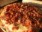

Document
Alguns tipos e sabores
A variedade de coberturas que se pode colocar sobre uma pizza é quase Infinita, entretanto, algumas preparações são tradicionais e têm fiéis seguidores:
Margherita
Mussarela
Portuguesa
Calabresa
California
Pepperoni
Quatro queijos

Bacon
 Alguns tipos e sabores
Alguns tipos e sabores Margherita
Margherita Mussarela
Mussarela Portuguesa
Portuguesa Calabresa
Calabresa California
California Pepperoni
Pepperoni Quatro queijos
Quatro queijos